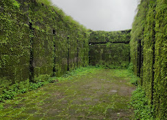

विशापूर किल्ला
Location : Click Here For Google Map
- माहिती
- विशापूर किल्ला महाराष्ट्र राज्याच्या पुणे जिल्ह्यात स्थित एक ऐतिहासिक किल्ला आहे. हा किल्ला सह्याद्री पर्वतातील एक महत्त्वाचा किल्ला आहे. विशापूर किल्ला शिरवळ येथून सुमारे १५ किमी अंतरावर स्थित आहे आणि त्याचा ऐतिहासिक महत्त्व अत्यंत महत्त्वपूर्ण आहे.
किल्ल्याची बांधणी मराठा साम्राज्याच्या शासक शिवाजी महाराजांच्या काळात झाली होती. किल्ल्याची रचना चांगलीच मजबुतीची आहे आणि त्याची किल्ल्याच्या कडेकडेच्या भिंती, किल्ल्याच्या दारातील उंच प्रवेशद्वार आणि गडाच्या आत असलेल्या ऐतिहासिक संरचनांमुळे तो शत्रूच्या हल्ल्यापासून सुरक्षा प्रदान करणारा बनला होता.
किल्ल्याच्या शिखरावरून सुंदर दृश्य दिसते, जे पर्यटकांसाठी एक अद्वितीय अनुभव प्रदान करते. किल्ल्याचे प्रवेशद्वार आणि गडाच्या मुख्य भागांची रचना त्या काळातील स्थापत्यकलेचे उत्कृष्ट उदाहरण आहे. आजकाल, विशापूर किल्ला एक प्रमुख पर्यटन स्थळ म्हणून ओळखला जातो आणि येथे पर्यटक मोठ्या संख्येने येतात.
Explore the historical beauty
